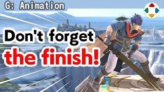
速览
收招（Follow-Through）是攻击后成为破绽的动作，也叫后摇（详见「攻击动作的拆解」）。你可能觉得攻击结束后的动作没那么重要，但这里才最常入眼。作为对战动作游戏，《大乱斗》攻击响应越快越好，所以从预备进入攻击整体很快；但有博弈时，强攻击后若没有相应的破绽，游戏会很粗糙。具体来说，标准攻击大约不到 1 秒结束，较大的突击攻击超过 1 秒的在全体中也偏少；攻击发生的时机目安是总时长的1/3～1/4，快的话 1/5 左右。也就是说剩下的时间全是收招：攻击前短，攻击后长。接着介绍《大乱斗》各种攻击的发生与结束（因有取消帧，把不能操作的时间表示为硬直）——马尔斯、罗莎塔、迪迪刚、机器人、Mii 枪手、小麦克等——攻击后的破绽有多长，应该明白了。时间长就意味着被看的时间也长；反过来，攻击本身是瞬间结束的，真的只有几分之一秒。所以收招必须是能充分传达之前在做什么的动作。收招最终要回到待机，但不要只是补间回去：在给定时间里充分表现攻击动作，坚持到能容许的极限，再把心情转为被动，表现刚才的攻击。另外回到待机期间设置取消帧，即接受操作的时机：那时的姿势当然要恢复到看起来能操作的程度，这平衡也很重要。攻击后的收招也是攻击本身，最后都不能松懈，要好好演出。
1. 收招最常入眼 0:03
收招是攻击后成为破绽的动作，也叫后摇。
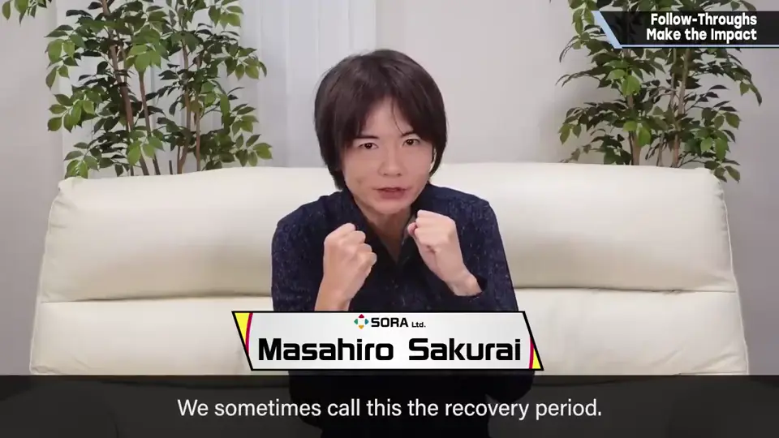
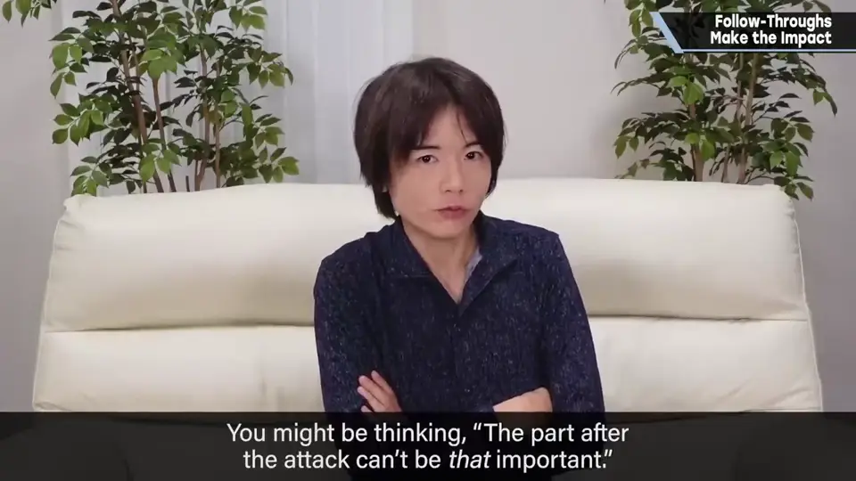
你可能觉得攻击结束后的动作没那么重要——但其实这里最常入眼。
2. 快与破绽 0:28
作为对战动作游戏，《大乱斗》攻击响应越快越好，所以从预备进入攻击整体都很快。
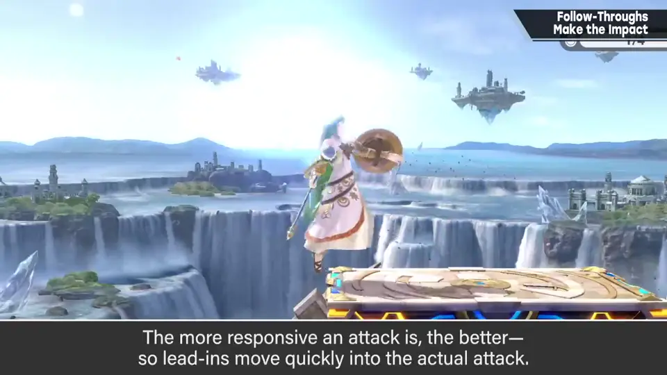
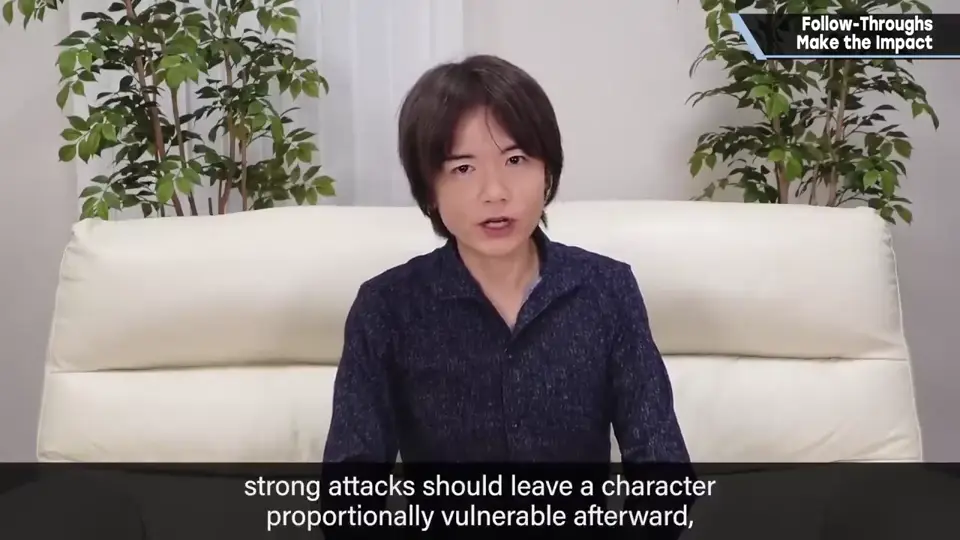
3. 时间的比例 0:50
具体来说，标准攻击大约不到 1 秒结束；较大的突击攻击超过 1 秒的，在全体中也偏少。
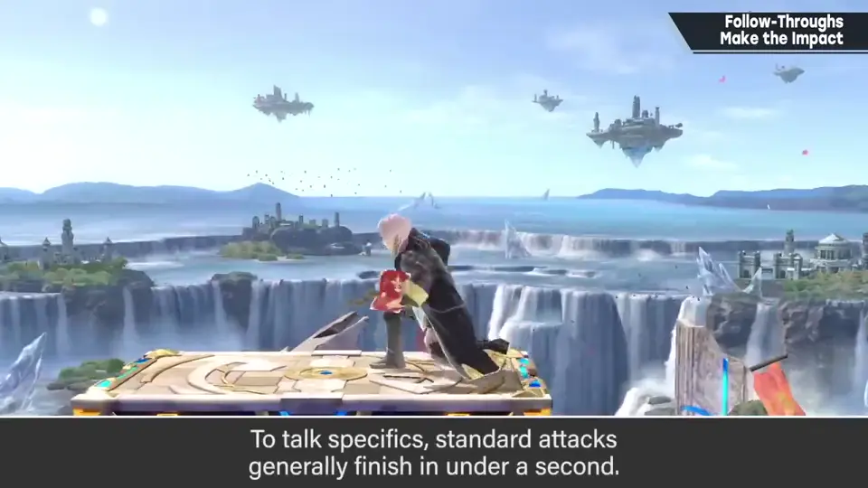
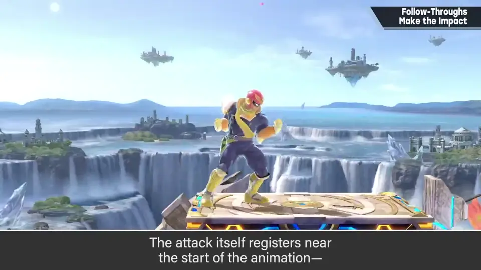
攻击发生的时机，目安是总时长的 1/3～1/4，快的话 1/5 左右。
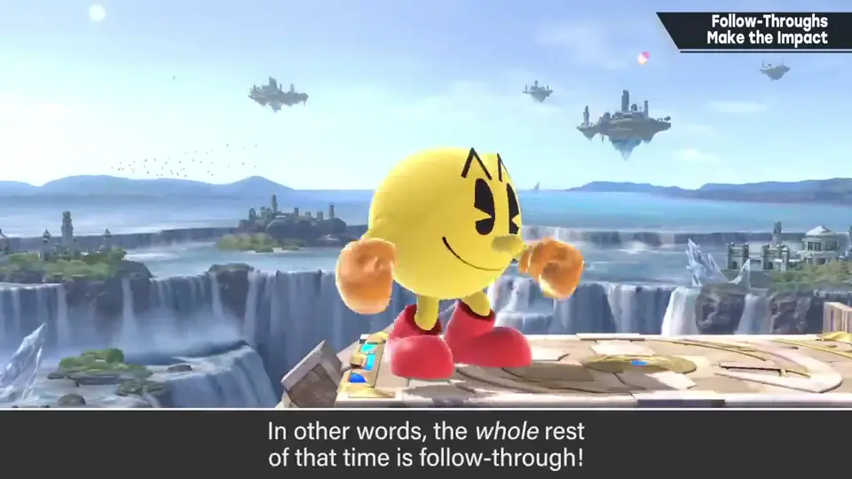
4. 各种攻击的数据 1:27
介绍《大乱斗》各种攻击的发生与结束。因为有取消帧，把不能操作的时间表示为硬直。
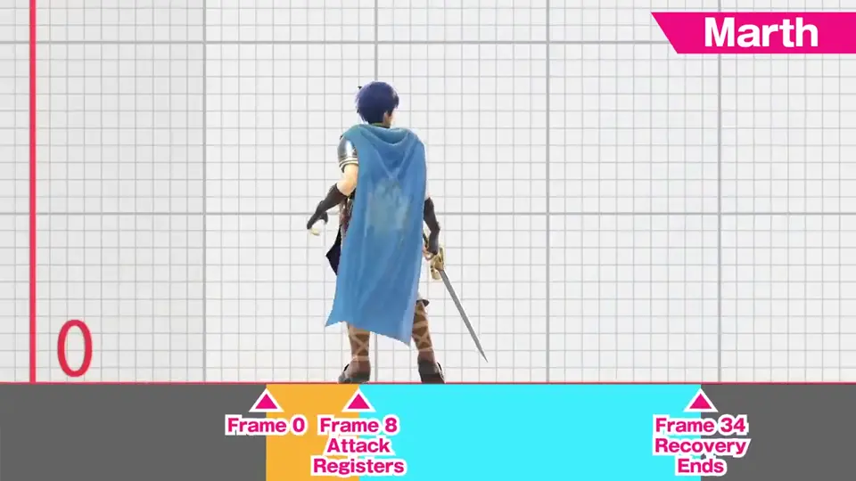
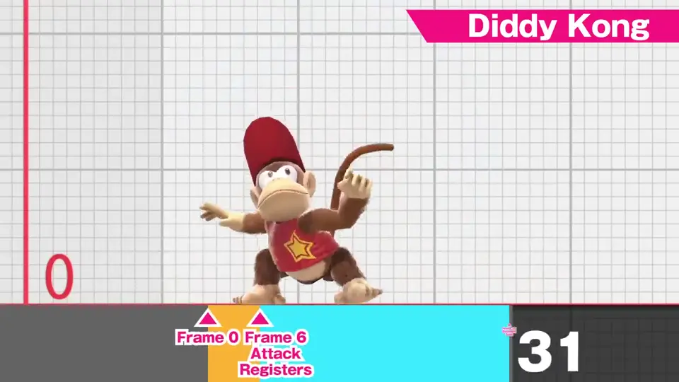
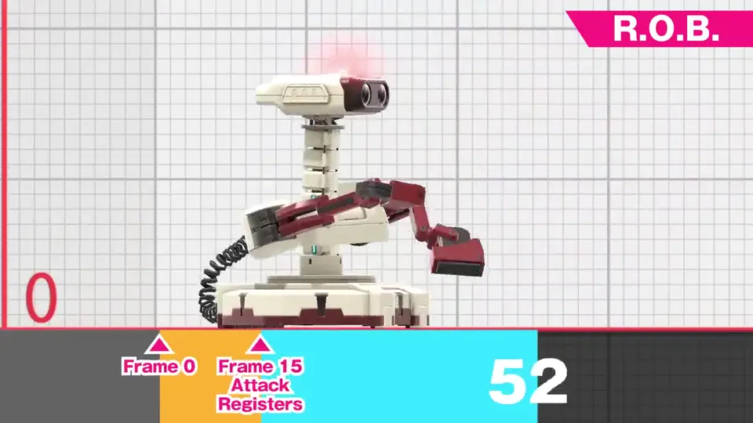
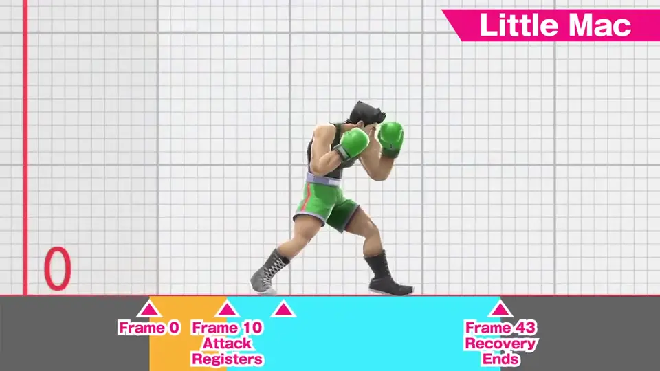
攻击后的破绽有多长，应该明白了。
5. 收招要传达攻击 2:54
时间长，意味着被看见的时间也长。反过来，攻击本身瞬间就结束了，真的只有几分之一秒。
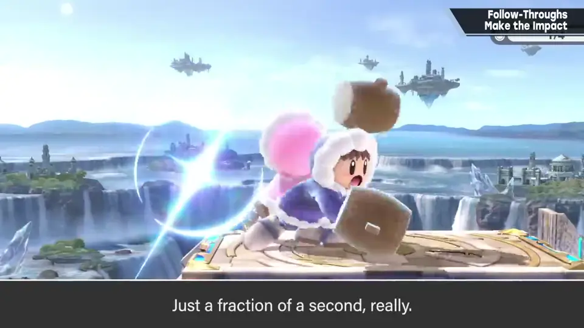
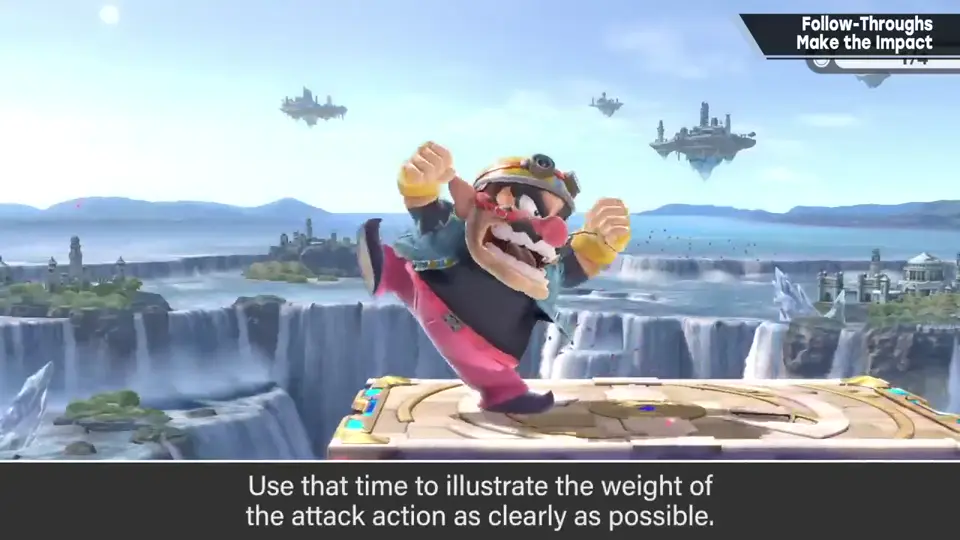
收招最终要回到待机，但不要只是补间回去：在给定时间里充分表现攻击动作，坚持到能容许的极限，再把心情转为被动，表现刚才的攻击。
6. 取消帧 3:40
回到待机期间还要设置取消帧，即接受操作的时机。那时的姿势当然要恢复到看起来能操作的程度——这平衡也很重要。
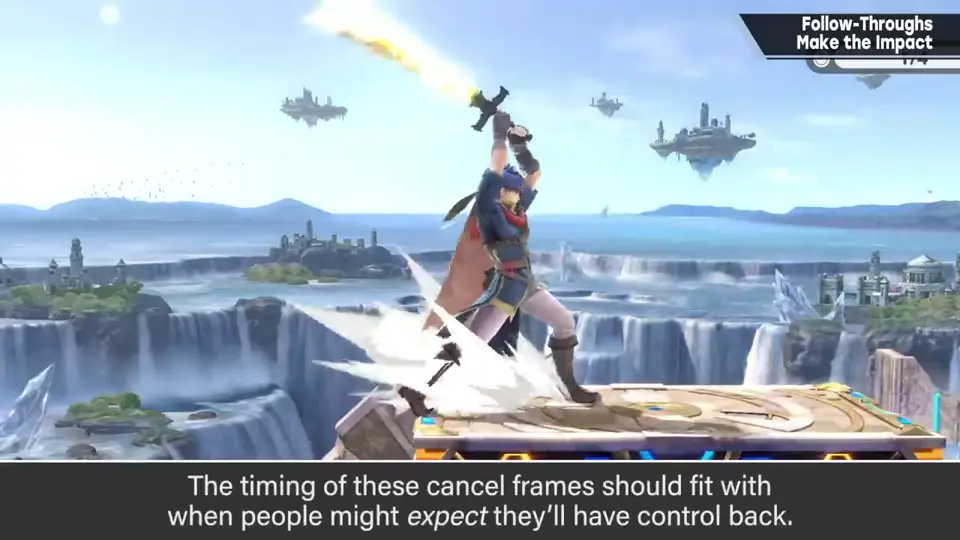
自测题
1. 为什么收招最常入眼？
攻击发生在总时长的 1/3～1/4，剩下全是收招；被看的时间最长。 1:05
2. 收招应该怎样表现？
不只是补间回待机；在给定时间里充分表现攻击，坚持到极限。 3:20
3. 取消帧时的姿势要注意什么？
要恢复到看起来能操作的程度。 3:45